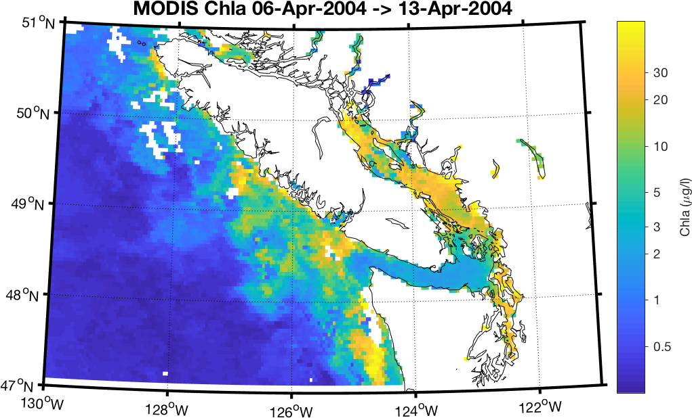
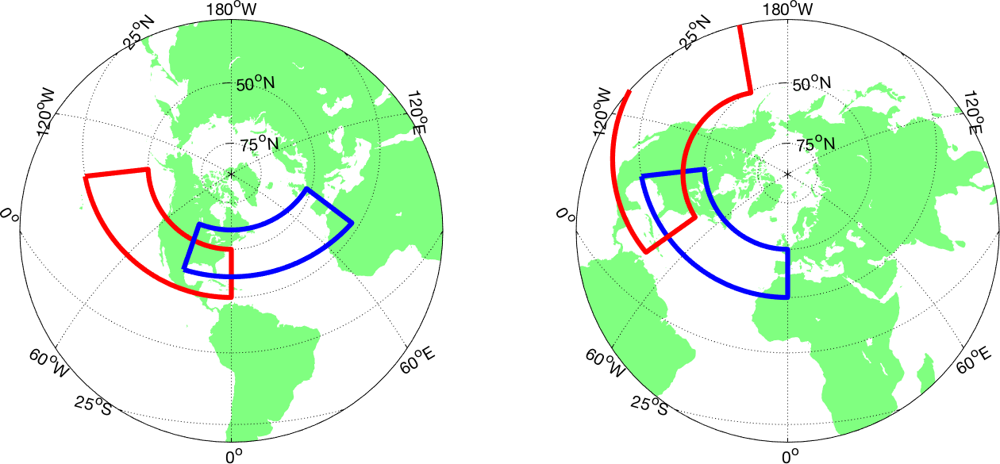
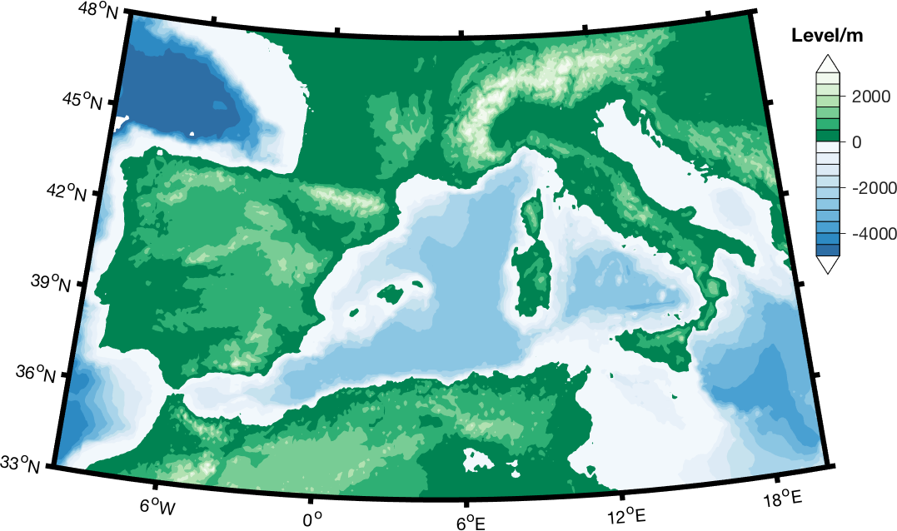

M_Map:
Users Guide v1.4
Table of Contents
(Note - a Chinese translation of this guide can be found here)
- Getting started
- Specifying projections
- Azimuthal projections
- Cylindrical and Pseudo-cylindrical projections
- Conic projections
- Miscellaneous global projections
- Yeah, but which projection should I use?
- Map scales
- Map coordinate systems - geographic and geomagnetic
- Coastlines and Bathymetry
- Customizing the axes
- Adding your own data
- Drawing lines, text, arrows, patches, hatches, speckles, and contours
- Drawing images and p_color
- Drawing tracklines
- Drawing range rings and geodesics
- Converting longitude/latitude to projection coordinates
- Converting projection to longitude/latitude coordinates
- Computing distances between points
- Annotation

- More complex maps
- Removing features from a map
- Adding your own coastlines
- Reading and Handling coastline data
- ESRI Shapefiles
- Projection conversions
- Coastline Extractor
- DCW political boundaries
- Natural Earth political boundaries
- GSHHS(G) high-resolution coastline database
- Adding your own topography/bathymetry
- Sandwell and Smith Bathymetry
- TerrainBase 5-minute global bathymetry/topography
- ETOPO 2- and 1- minute global bathymetry/topography
- M_Map toolbox contents and description
- Known Problems and Bugs
- OCTAVE Compatibility Issues
- Changes since last release
1. Getting started
First, get all the files, either as a zip archive or
a gzipped
tar-file and unpack them. If you are unpacking the zip file MAKE
SURE YOU ALSO UNPACK SUBDIRECTORIES! Now, start up Matlab (version 5 or
higher). Make sure that the toolbox is in your path. This can be done
simply by cd'ing to the correct directory.
Alternatively, if you have unpacked them into directory /users/rich/m_map
(and /users/rich/m_map/private), then you can add this to
your search path:
path(path,'/users/rich/m_map');or
addpath /users/rich/m_map
To follow along with this document, you would then use a Web-browser to
open file:/users/rich/m_map/map.html,
that is, this HTML document.
Note: you may want to install M_Map as a toolbox accessible to all
users. To do this, unpack the files into $MATLAB/toolbox/m_map, add
that directory to the list defined in $MATLAB/toolbox/local/pathdef.m, and
update the cache file using
rehash toolboxcache
Instructions for installing an (optional) high-resolution bathymetry database are given in here, and instructions for installing the (optional) high-resolution GSHHS coastline database is given in here. However, we should first check that the basic setup is OK.
To see an example map, try this:
m_proj('oblique mercator');
m_coast;
m_grid;
This is a line map of the Oregon/British Columbia coast, using an
Oblique Mercator projection (A few more complex maps can be generated
by running the demo function m_demo).
The first line initializes the projection. Defaults are set for the different projection, so you can easily see what a specific projection looks like, but all projections have a number of optional parameters as well. To get the same map without using the defaults, you would use
m_proj('oblique mercator','longitudes',[-132 -125], ...
'latitudes',[56 40],'direction','vertical','aspect',.5);
The exact meanings of the various options is given in Section 2. However, notice that longitudes are specified using a signed notation - East longitudes are positive, whereas West longitudes are negative (Also note that a decimal degree notation is used, so that a longitude of 120 30'W is specified as -120.5).
The second line draws a coastline, using the 1/4 degree database.
Coastlines with greater resolution can be drawn, using your own
database (see also Section 8). m_coast
can be called with various line parameters. For example,
m_coast('linewidth',2,'color','r');
draws a thicker red coastline. Filled coastlines can also be drawn,
using the 'patch' option (followed by any of the usual
PATCH property/value pairs:
m_coast('patch',[.7 .7 .7],'edgecolor','none');
draws a coastline with a gray fill and no border.
The third line superimposes a grid. Although there are many
possible options that can be used to customize the appearance of the
grid, defaults can always be used (as in the example). These options
are discussed in Section 4. You can get a list of
the options using the GET syntax: which acts somewhat like the Finally, suppose you want to show and label the location of, say, a
mooring at 129W, 48 30'N. Finally (!), we may want to alter the grid details slightly. Note
that, a given map must only be initialized once. In order to get a list of the current projections, or Which currently return the following list: If you want details about the possible options for any of these
projections, add its name to the above command, e.g. which returns You can also get details about the current projection. For example, in
order to see what the default parameters are for the sinusoidal
projection, we first initialize it, and then use the In order to initialize a projection, you usually specify some location
parameters that define the geometry of the projection (longitudinal
limits, central parallel, etc.), as well as parameters that define the
extent
of the map (whether it is in a rectangular axis, what the border points
are, etc.). These vary slightly from projection to projection. Two useful properties for projections are (1) the ability the
preserve angles for differentially small regions, and (2) the ability
to preserve area. Projections satisfying the first condition are called
conformal, those satisfying the second are called
equal-area. No projection can be both. Many projections (especially global
projections) are neither, instead an attempt has been made to aesthetically balance
the errors in both conditions. Note: Most projections are currently spherical
rather than ellipsoidal. UTM is an ellipsoidal projection, and both the lambert conformal
conic and albers equal-area conic can be specified with ellipses if desired. This
is sometime useful when you have data (e.g. from a GIS package) at scales of Canadian provinces
or US states, which are often mapped using one of these projections.
It is unlikely that using a spherical earth model will be a problem (or an advantage) in
normal usage. Let's go through the list of available projections: Azimuthal projections are those in which points on the
globe are projected onto a flat tangent plane. Maps using these
projections have the property that direction or azimuth from the center
point to all other points is shown correctly. Great circle routes
passing through the central point appear as straight lines (although
great circles not passing through the central point may appear curved).
These maps are usually drawn with circular boundaries. The following
parameters specify the center point of an azimuthal projection map: Maps are aligned so that the specified longitude is vertical at
the map center, with its northern end at the top (but see option Either an angular
distance in degrees can be given (e.g. 90 for a hemisphere), or the
coordinates of a point on the boundary can be specified. Then, is used to specify the map boundary. The default is to enclose the map
in a circular boundary (chosen using either of the latter two options),
but a rectangular one can also be specified. However, rectangular maps
are usually better drawn using a cylindrical or conic projection of some sort.
Finally, rotates the figure so that the central longitude
is not vertical. THe azimuthal projections include: The stereographic projection is conformal, but not
equal-area. This projection is often used for polar regions. This projection is neither equal-area nor conformal,
but resembles a perspective view of the globe. Sometimes called the Lambert azimuthal equal-area
projection, this mapping is equal-area but not conformal. This projection is neither equal-area nor conformal,
but all distances and directions from the central point are true. This projection is neither equal-area nor conformal,
but all straight lines on the map (not just those through the center)
are great circle routes. There is, however, a great degree of
distortion at the edges of the map, so maximum radii should be kept
fairly small - 20 or
30 degrees at most. This is a perspective view of the earth, as seen by
a satellite at a specified altitude. Instead of specifying a the numerical value assigned to this property
represents the height of the viewpoint in units of earth radii. For
example, a satellite in an orbit of radius 3 earth radii would have an
altitude of
2. Cylindrical projections are formed by projecting
points onto a plane wrapped around the globe, touching only along some
great circle. These are very useful projections for showing regions of great
lateral extent, and are also commonly used for global maps of
mid-latitude regions only. Also included here are two pseudo-cylindrical
projections, the sinusoidal and Gall-Peters, which have some similarities to the
cylindrical projections (see below). These maps are usually drawn with rectangular
boundaries (with the exception of the sinusoidal and sometimes the
transverse mercator). This is a conformal map, based on a tangent cylinder
wrapped around the equator. Straight lines on this projection are rhumb
lines (i.e. the track followed by a course of constant bearing). The
following properties affect this projection:
Either longitude limits can be set, or a central
longitude defined implying a global map. Latitude limits are most usually the same in
both N and S latitude, and can be specified with a single value, but
(if
desired) unequal limits can also be used. DO NOT USE MERCATOR FOR A MAP THAT DOES NOT CONTAIN THE EQUATOR!!!
This projection is neither equal-area nor conformal,
but "looks nice" for world maps. Properties are the same as for the
Mercator, above. This projection is neither equal-area nor conformal.
It consists of equally-spaced latitude and longitude lines, and is very
often used for quick plotting of data. It is included here simply so
that such maps can take advantage of the grid generation routines. Also
known as the Plate Carree. Properties are the same as for the Mercator, above. The oblique mercator arises when the great circle
of tangency is arbitrary. This is a useful projection for, e.g., long
coastlines or other awkwardly shaped or aligned regions. It is
conformal but not equal area. The following properties govern this
projection: Two points specify a great circle, and thus the
limits of this map (it is assumed that the region near the shortest of
the two arcs is desired). The 2 points (G1,L1) and (G2,L2) are thus at
the center of either the top/bottom or left/right sides of the map
(depending on the This specifies the size of the map in the direction
perpendicular to the great circle of tangency, as a proportion of the
length shown. An aspect ratio of 1 results in a square map, smaller
numbers result in skinnier maps. Aspect ratios >1 are possible, but not
recommended. This specifies whether the great circle of tangency
will be horizontal on the page (for making short wide maps), or
vertical (for tall thin maps). The Transverse Mercator is a special case of the
oblique mercator when the great circle of tangency lies along a
meridian of longitude, and is therefore conformal. It is often used for
large-scale maps and charts. The following properties govern this projection: These specify the limits of the map. Although it makes most sense in general
to specify the central meridian as the meridian of tangency (this is
the default), certain map classification systems (noteably UTM) use only a
fixed set of central longitudes, which may not be in the map center. The map limits can either be based on
latitude/longitude (the default), or the map boundaries can form an
exact rectangle. The difference is small for large-scale maps. Note: Although this
projection is similar to the Universal Transverse Mercator (UTM) projection, the
latter is actually ellipsoidal in nature. UTM maps are needed only for high-quality maps of
small regions of the globe (less than a few degrees in longitude). This
is an ellipsoidal projection. Options are similar to those of the
Transverse Mercator, with the addition of These are computed automatically if not specified.
The ellipsoid defaults to For a list of available ellipsoids try The big difference between UTM and all the
other projections is that for ellipsoids other than This projection is usually called
"pseudo-cylindrical" since parallels of latitude appear as straight
lines, similar to their appearance in cylindrical projections tangent
to the equator. However, meridians curve together in this projection in
a sinusoidal way (hence the name), making this map equal-area. Parallels of latitude and meridians both appear as
straight lines, but the vertical scale is distorted so that area is
preserved. This is useful for tropical areas, but the distortion in
polar areas is extreme. Conic projections result from projecting onto a cone
wrapped around the sphere. The vertex of the cone lies on the
rotational axis of the sphere. The cone is either tangent at a single
latitude, or can intersect the sphere at two separated latitudes. It is
a useful projection for mid-latitude areas of large east-west extent.
The following properties affect these projections: These specify the limits of the map. The central longitude appears as a vertical on the
page. The default value is the mean longitude, although it may be set
to any value (even one outside the limits). The standard parallels can be specified. Either one or
two parallels can be given, the default is a single parallel at the
mean latitude The map limits can either be based on
latitude/longitude (the default), or the map boundaries can form an
exact rectangle which contain the given limits. Unless the region being mapped is small, it
is best to leave this The default is to use a spherical earth model for the mapping transformations. However, ellipsoidal coordinates can
also be specified. This tends to be useful only for doing coordinate transformations (e.g., if a particular
gridded database in in this kind of projection, and you want to find lat/long data), since
the difference would be impossible to see by eye on a plot.
The particular ellipsoid used can be chosen using the following
property: For a list of available ellipsoids try Finally, it is sometimes useful if you just want to use But note that "false eastings" and "false northings" are not handled by This projection is equal-area, but not conformal This projection is conformal, but not equal-area.

There are a number of projections which don't really
fit into any of the above categories. Mostly these are global
projections (i.e. they show the whole world), and they have been
designed to be "pleasing to the eye". I'm not sure what use they are in
general, but they make
nice logos! An equal-area projection with curved meridians and
parallels. Also called the Elliptical or Homolographic
Equal-Area Projection. Parallels are straight (and parallel) in this
projection. Note that example 4 shows a rather
sophisticated use for viewing the oceans, designed to reduce distortion. A more standard map
can be made using Not equal-area OR conformal, but supposedly "pleasing to the eye".
Well, it depends really on how large an area you are
mapping. Usually, maps of the whole world are Mercator, although often
the Miller Cylindrical projection looks better because it doesn't
emphasize the polar areas as much. Another choice is the Hammer-Aitoff
or Mollweide (which has meridians curving together near the poles).
Both are equal-area. It's probably not a good idea to use these
projections for maps that don't have the equator somewhere near the
middle. The Robinson projection is not equal-area or conformal, but was the choice of National Geographic (for a while, anyway),
and also appears in the IPCC reports. If you are plotting something with a large
north/south extent, but not very wide (say, North and South America, or
the North
and South Atlantic), then the Sinusoidal or Mollweide projections will
look pretty good. Another choice is the Transverse Mercator, although
that
is usually used only for very large-scale maps (i.e., ones covering a very small area). For smaller areas within one hemisphere or other
(say, Australia, the United States, the Mediterranean, the North
Atlantic) you might pick a conic projection. The differences between
the two available conic projections are subtle, and if you don't know
much about projections it probably won't make much difference which one
you use. If you get smaller than that, it doesn't matter a
whole lot which projection you use. One projection I find useful in
many cases is the Oblique Mercator, since you can align it along a long
(but narrow) coastal area. If map limits along lines of
longitude/latitude are OK, use a Transverse Mercator or Conic
Projection. The UTM projection is also useful if you want to make a grid in meters, since the
projection coordinates (i.e., "eastings and northings") are in meters. Polar areas are traditionally mapped using a
Stereographic projection, since everyone seems to think it looks nice to have a
"bullseye" pattern of latitude lines (the fact that lines of longitude come together at the poles also makes them
an almost irresistable destination for polar scientists and explorers). If you want to get a quick idea of what any
projection looks like, it is simple to do so - default parameters for all functions are set for
a "typical" usage. For example, to see a stereographic map, try: M_Map usually scales the map so that it fits exactly
within the current axes. If you just want a nice picture (which is
mostly the case) then this is exactly what you need. On the other hand,
sometimes you want to print things out at some exact scale (i.e. if you
really much prefer sitting at your desk with a ruler and a piece of
paper trying to figure out how far apart Bangkok and Tokyo are). Use
the after you have drawn everything (Be careful - a
1:250000 map of the world is a lot bigger than 8.5"x11" sheet of
paper). This option is usually only useful for
large-scale maps, i.e. maps of very small areas). If you wish to know the current scale, calling To return to the default scaling call (PS - If you do want to find distances from Bangkok
to anywhere, plot an azimuthal equidistant projection of the world
centered on Bangkok (13 44'N, 100 30'E), and choose a fairly small
scale, like 1:200,000,000). Another option would be to use range rings, see example 11. Latitude/Longitude is the
usual coordinate system for maps. In some cases UTM coords are also
used, but these are really just a simple transformation based on the
location of the equator and certain lines of longitude. On the other
hand, there are occasions when a coordinate system based on some other
set of axes is useful. For example, in space
physics data is often projected in coordinates based on the magnetic
poles. M_Map has a limited capability to deal with data in these other
coordinate systems. Note that this option is not
used very much, hence is not fully supported. In particular, filled
coastlines may not work properly. M_Map includes two fairly simple databases for coastlines and
global elevation data. Highly-detailed databases are not included in
this release because they are a) extremely large and b) extremely
time-consuming to
process (loops are inherently involved). If more detailed maps are
required, section 8 and section 9
give instructions on how to add some freely-available high-resolution
datasets.
M_Map includes a 1/4 degree resolution coastline database. This
is suitable for maps covering large portions of the globe, but is
noticeably coarse for many large-scale applications. The M_Map
database is accessed using the or where the optional arguments are all the standard arguments for
specifying line style, width, color, etc. Coastlines can also be drawn
as filled
patches using where the optional trailing arguments are the standard patch
properties. For example, draws gray land, outlined in green. When patches are being drawn, lakes
and inland seas are given the axes background colour. Many older (ocean) maps are created with speckled land
boundaries, which looks
very nice in black and white. You can get a speckled boundary with which calls Note that line coastlines are usually drawn rather rapidly.
Filled coastlines take considerably more time to generate (because map limits
are not necessarily rectangular, clipping must be accomplished in m-files). M_Map can access a 1-degree resolution global elevation database
(actually, this database is is included in the Matlab distribution,
used by In order to get the perfect grid, you may want to
experiment with different grid options. Two functions are useful here,
to get a Lambert conic projection of North America.
Now try The coastline is still there, but the grid has
disappeared and the axes shows raw X/Y projection coordinates. Now, try
this: The various options that can be changed include: which specifies whether or not an outline box is drawn.
Three types of outline boxes are available: The number/location of ticks on the longitude grid is given by If a single
number is specified, grid lines/values are drawn for approximately that
number of equally-spaced locations (the number is only approximate
because the M_GRID attempts to find "nice" intervals, i.e. it rounds to
even increments). Exact locations can be specified by using a vector of
location values. There is an analogous Special labels can be specified using Labels can either be numerical values
(which are then formatted by M_GRID), or string values which are used
without change. There is an analogous Longitude labels are either middled onto the ends of their respective
grid lines (and drawn perpendicular to those lines), or are drawn
extending outwards from the ends of those lines. There is an analogous The lengths of tickmarks (as a fraction of plot width) is specified using and their direction is set inwards or outwards with If Axis labels can be produced either in decimal degrees (dd) or degrees-minutes (dm, default): A number of other (obvious) properties can also be set: Finally, specifies where the X-axis will be drawn, either at the bottom
(southermost) end, at the top (northernmost) end, or in the middle, and specifies where the Y-axis will be drawn, either at the left
(westernmostmost) end, at the right (easternmost) end, or in the
middle. Titles and x/ylabels can be added to maps using the A legend box can be added to the map using A scale bar can be added to the map using WARNING - the scalebar is probably not useful for any global
(i.e. whole-world) or even a significant-part-of-the-globe
map, because the actual ground scale is often quite distorted in some
parts of the map, but I won't stop you using it. Caveat user! The purpose of M_Map is to allow you to map your own data!
Once a suitable grid and (possibly) a coastline have been chosen, you
can add your own lines, text, or contour plots using built-in M_Map
drawing functions which handle the conversion from longitude/latitude
coordinates to projection coordinates. These drawing functions are very
similar to the standard Matlab plotting functions, and are described in
the next section. Sometimes you may want to convert between longitude/latitude and
projection coordinates without immediately plotting the data. This
might happen if you want to interactively select points using Maps are drawn to fit within the boundaries of the plot axes. Thus
their scale is somewhat arbitrary. If you are interested in making a
map to
a given scale, e.g. 1:200000 or something like that, you can do so by
using the CAUTION: One problem that sometimes occurs is that data does not
appear on the plot due to ambiguities in longitude values. For example,
if plot longitude limits are [-180 180], a point with a longitude of,
say, 200,
may not appear in cylindrical and conic projections. THIS IS NOT A BUG.
Handling the clipping in "wrapped around" curves requires adding points
(rather than just moving them) and is therefore incompatible with
various
other requirements (such as keeping input and output matrices the same
size
in the conversion routines described below). For most purposes you do not need to know what the
projection coordinates actually are - you just want to plot something
at a specified longitude/latitude. Most of the time you when you want
to plot something on a map you want to do so by specifying
longitude/latitude coordinates, instead of the usual X/Y locations. To
do so in M_Map, replace calls to Each of these functions will handle the coordinate
conversion internally, and will return a vector of handles to the
graphic objects if desired. The only difference between these functions
and the
standard Matlab functions is that the first two arguments MUST be
longitude
and latitude. One caveat applies to Data gridded in longitude and latitude can also
be contoured: Again, these functions will return handles to graphics
objects, allowing (for example) the drawing of labelled contours: Fancy arrows (i.e. with width, head shape, and
colour specifications) can be generated using You can also get hatched areas by calling Note that this call does not generate the edge lines (an additional See the on-line help and/or Example
12 for more details about using There is no Satellite data from mid-latitudes is sometime amenable to this
solution. See the examples of
satellite data manipulation.
m_grid get
get(gca) syntax for
regular plots.
[X,Y]=m_ll2xy(-129,48.5);
line(X,Y,'marker','square','markersize',4,'color','r');
text(X,Y,' M5','vertical','top');
m_ll2xy (and its inverse m_xy2ll)
convert from longitude/latitude coordinates to those of the projection.
Various clipping options can also be specified in converting to
projection coordinates. If you are willing to accept default clipping
setting, you can use the
built-in functions m_line and m_text :
m_line(-129,48.5,'marker','square','markersize',4,'color','r');
m_text(-129,48.5,' M5','vertical','top');
clf
m_proj('oblique mercator'); % repeated here so cut-n-paste simplified
m_coast('patch',[.7 .7 .7],'edgecolor','none');
m_grid('xlabeldir','end','fontsize',10);
m_line(-129,48.5,'marker','square','markersize',4,'color','r');
m_text(-129,48.5,' M5','vertical','top');

2. Specifying projections
m_proj get
m_proj('set');
Available projections are:
Stereographic
Orthographic
Azimuthal Equal-area
Azimuthal Equidistant
Gnomonic
Satellite
Albers Equal-Area Conic
Lambert Conformal Conic
Mercator
Miller Cylindrical
Equidistant Cylindrical
Oblique Mercator
Transverse Mercator
Sinusoidal
Gall-Peters
Hammer-Aitoff
Mollweide
Robinson
UTM
m_proj('set','stereographic');
'Stereographic'
<,'lon<gitude>',center_long>
<,'lat<itude>', center_lat>
<,'rad<ius>', ( degrees | [longitude latitude] )>
<,'rec<tbox>', ( 'on' | 'off' )>
'set'
option:
m_proj('sinusoidal');
m_proj get
Current mapping parameters -
Projection: Sinusoidal (function: mp_tmerc)
longitudes: -90 30 (centered at -30)
latitudes: -65 65
Rectangular border: off
<,'lon<gitude>',center_long>
<,'lat<itude>', center_lat>
rotangle
below in order to rotate this orientation). Then the extent of the map
is defined by
<,'rad<ius>', ( degrees | [longitude latitude] )>
<,'rec<tbox>', ( 'on' | 'off' | 'circle' )>
<,'rot<angle>', degrees CCW>

radius
for the map, the viewpoint altitude is specified: <,'alt<itude>',altitude_fraction >
<,'lon<gitude>',( [min max] | center)>
<,'lat<itude>', ( maxlat | [min max])>

<,'lon<gitude>',[ G1 G2 ]>
<,'lat<itude>', [ L1 L2 ]>
'direction' property).
<,'asp<ect>',value>
<,'dir<ection>',( 'horizontal' | 'vertical' )
<,'lon<gitude>',[min max]>
<,'lat<itude>',[min max]>
<,'clo<ngitude>',value>
<,'rec<tbox>', ( 'on' | 'off' )>
<,'zon<e>', value 1-60>
<,'hem<isphere>',value 0=N,1=S>
'normal', a spherical earth of
radius 1 unit, but other options can also be chosen using the following
property:
<,'ell<ipsoid>', ellipsoid>
m_proj('set','utm').'normal'
the projection coordinates are in meters, so-called "easting" and "northing". To take full
advantage of this it is often useful to call m_proj with 'rectbox'
set to 'on' and not to use the long/lat grid generated
by m_grid (since the regular matlab grid will be in units
of meters). 
<,'lon<gitude>',[min max]>
<,'lat<itude>',[min max]>
<,'clo<ngitude>',value>
<,'par<allels>',[lat1 lat2]>
<,'rec<tbox>', ( 'on' | 'off' )>
'off' .
<,'ell<ipsoid>', ellipsoid>
m_proj('set','albers').
M_Map as an engine to transform
between projected coordinates in some database, and lat/long, to specify the origin of the coordinate
system that was originally used with
<,'fal<se_origin>', [long lat]>
m_proj, instead you must
correct for them explicitly using
[long,lat]=m_xy2ll(x-false_easting,y-false_northing);
if you are trying to do this.


m_proj('mollweide');
m_coast('patch','r');
m_grid('xaxislocation','middle');

m_proj('stereographic'); % Example for stereographic projection
m_coast;
m_grid;
m_scale primitive for this - for a 1:250000 map, call
m_scale(250000);
m_scale
without any parameters will calculate and return that value. m_scale('auto').
m_coord allows you to change the coordinate system from
geographic to geomagnetic. The following code gives you the idea - grids and boxes
are shown in the two different coordinate systems:
lat=[25*ones(1,100) 50*ones(1,100) 25]; % Outline of a box
lon=[-99:0 0:-1:-99 -99];
subplot(121);
m_coord('IGRF2000-geomagnetic'); % Treat all lat/longs as geomagnetic
m_proj('stereographic');
m_coast('patch',[.5 1 .5],'edgecolor','none');
m_grid;
m_line(lon,lat,'color','r','linewi',3); % "lat/ln" assumed geomagnetic on the geomagnetic map
m_coord('geographic'); % Switch to assuming geographic
m_line(lon,lat,'color','b','linewi',3'); % Now they are treated as geographic
subplot(122);
m_coord('geographic'); % Define all in geographic
m_proj('stereographic');
m_coast('patch',[.5 1 .5],'edgecolor','none');
m_grid;
m_line(lon,lat,'color','b','linewi',3);
m_coord('IGRF2000-geomagnetic'); % Now assume that values are in geomagnetic
m_line(lon,lat,'color','r','linewi',3);

3. Coastlines and Bathymetry
m_coast function.
Coastlines can be drawn as simple lines,
using
m_coast('line', ...optional line arguments );
m_coast( optional line arguments );
m_coast('patch', ...optional patch arguments );
m_coast('patch',[.7 .7 .7],'edgecolor','g');
m_coast('speckle', ....optional m_hatch arguments);
m_hatch. This only looks nice if there aren't
too many
very tiny islands and/or lakes in the image (see Example 13).
$MATLAB/toolbox/matlab/demos/earthmap.m). A
contour map of elevations at default levels can be drawn using m_elev;
Different levels can also be specified:
m_elev('contour',LEVELS, optional contour arguments);
For example, if you want all the contours to be dark blue, use:
m_elev('contour',LEVELS,'edgecolor','b');
Filled contours are also possible:
m_elev('contourf',LEVELS, optional contourf arguments);
Finally, if you want to simply extract the elevation data for your own
purposes,
[Z,LONG,LAT]=m_elev([LONG_MIN LONG_MAX LAT_MIN LAT_MAX]);
returns rectangular matrices for depths Z at locations LONG,LAT.
4. Customizing axes
m_grid which draws a grid, and m_ungrid which erases the current grid
(but leaves all coastlines and user-specified data alone). Try
m_proj('Lambert');
m_coast;
m_grid;
m_ungrid
m_grid('xtick',10,'tickdir','out','yaxislocation','right','fontsize',7);
'box',( 'on' | 'off' | 'fancy' )
'on', the
default, is a a simple line. Two types of fancy outline boxes are
available. If 'tickdir' is 'in', then
alternating black and white patches are made (see example 2). If 'tickdir' is
set to 'out', then a more complex line pattern is drawn
(see example 6). Fancy boxes are in
general only available for maps bounded by lat/long limits (i.e. not
for azimuthal projections), but if this option is chosen
inappropriately a warning message is issued.
'xtick',( num | [value1 value2 ...])
'ytick'
property.
'xticklabels',[label1;label2 ...]
'yticklabels'
property.
'xlabeldir', ( 'middle' | 'end' )
'ylabeldir' property.
'ticklen',value
'tickdir',( 'in' | 'out' )
'box'
is set to 'fancy', the tickdir specifies the form of the fancy
outline box (their is the 'in' version and the 'out' version).
'tickstyle',( 'dd' | 'dm' )
'color',colorspec
'gridcolor',colorspec
'backgroundcolor',colorspec
'linewidth', value
'linestyle', ( linespec | 'none' )
'fontsize',value
'fontname',name
'xaxisLocation',( 'bottom' | 'middle' | 'top' )
'yaxisLocation',( 'left' | 'middle' | 'right' )
title
and x/ylabel functions in the usual
way (this is a change from v1.0 in which the 'visible' property had to
be explicitly set to 'on'; this is now done within m_grid).
m_legend.
Only some of the functionality of legend is currently
included. The legend box can be dragged and dropped using the mouse
button.
m_ruler. The
bar is drawn horizontally or vertically, and will create a 'nice' number of ticks
(although this can be changed with another calling parameter). The location is
specified in normalized coordinates (i.e. between 0 and 1) so you can adjust
placement on the map, see Examples 9 and 10.
It is probably best to call m_ruler AFTER calling m_grid
since m_grid resets the normalization.
5. Adding your own data
ginput,
or if you want to draw labels tied to a specific point on the screen
rather than a particular longitude/latitude. Projection conversion
routines are described in sections 5.5 and 5.6. Once raw longitude/latitude coordinates are
converted into projection coordinates, standard Matlab plotting
functions can be used. m_scale primitive, see
section 2.6
. The data units are the projection coordinates, which are
distances
expressed as a fraction of earth radii. To get a map "distance" between
two points, use the Cartesian distance between the points in the
projection
coordinate system and multiply by your favourite value for the earth's
radius, usually around 6370 km (exception - the UTM projection uses
coordinates
of northing and easting in meters, so no conversion is necessary).
plot, line, text, quiver,
patch, annotationcontour, and contourf with M_Map equivalents that
recognize longitude/latitude coordinates by prepending "m_" to the
function name. For example,
m_plot(LONG,LAT,...line properties) % draw a line on a map (erase current plot)
m_line(LONG,LAT,...line properties) % draw a line on a map
m_text(LONG,LAT,'string') % Text
m_quiver(LONG,LAT,U,V,S) % A quiver plot
m_patch(LONG,LAT,..patch properties) % Patches.
m_annotation('line',LON,LAT) % Annotation
m_patch. For
compatibility reasons this uses the same code that applies to coastline
filling. Coastlines come either as either "islands" or "lakes", and
M_Map keeps track of the difference by assuming curves are oriented so
that the filled area ("land") is always on the right as we go around
the curve. This is slightly different than the convention used in patch
which always fills the inside. Keeping track of this difference is
relatively straightforward in a Cartesian system, but not so easy in
spherical coordinates. In the absence of other information m_patch
tries to do the right thing, but (especially when the patch intersects
a map boundary) it can get confused. If a patch isn't filling
correctly, try reversing the order of points using flipud
or fliplr.
m_contour(LONG,LAT,VALUES)
m_contourf(LONG,LAT,VALUES)
[cs,h]=m_contour(LONG,LAT,VALUES)
clabel(cs,h,'fontsize',6);
m_vec.m .
See the on-line help for more details about the use of m_vec.m_hatch:
m_hatch('single',LONG,LAT,...hatch properties) % Interior Single Hatches.
m_hatch('cross',LONG,LAT,...hatch properties) % Interior Crossed Hatches.
m_line
is required for this. In addition, we can speckle the inside edges of
patches using:
m_hatch('speckle',LONG,LAT,...speckle properties) % Speckled edges.
m_hatch.m_pcolor is a drop-in replacement for p_color,
but you must be careful with its use near map boundaries. Ideally
one would want data to extend up to (but not across) a map boundary
(i.e. polygons are clipped). However, due to the way in which matlab
handles surfaces this is not easily done. Instead - unless you are
using a simple cylindrical or conic projection - you will probably get
a ragged edge for the coloured surface. m_image. The image() function
plots data in rectangular pixels only, and in general projected data
will NOT appear as rectangular pixels. If you want to display a large
pixel image on your map, there are several options:
m_pcolor with shading
flat. This is reasonably satisfactory (although it can be slow for
large images), but you SHOULD offset your coordinates by
one-half of the pixel spacing. This is because of the different
behaviors of pcolor and image when given the same
data:
image will center the (i,j) pixel at the location of
the (i,j)th entry of the X/Y matrices,as long as these matrices are regular in their spacing. If they
are irregular, then pixels are spaced evenly between the 1st and last entries in the matrix.p_color with shading flat will draw a panel between
the (i,j),(i+1,j),(i+1,j+1),(i,j+1) coordinates of the X/Y matrices
with a color corresponding to the data value at (i,j). Thus everything
will appear shifted by one half a pixel spacing.image call and then overplot an M_Map map. For example,
polar satellite images are often given on an equally-spaced grid in a polar stereographic projection.
In this case you should use m_ll2xy to get the screen coordinates of
the image corners, then use those points in an image() call before
overplotting your data. See in particular this example.
HINT - check to see that coastlines overplot in the right place to make sure this is working correctly.

Drawing tracklines
It is sometimes useful to
annotate lines representing the time-varying location of a ship, aircraft, or satellite with time
and date annotations. This can be done using m_track:
m_proj('UTM','long',[-72 -68],'lat',[40 44]);
m_gshhs_i('color','k');
m_grid('box','fancy','tickdir','out');
% fake up a trackline
lons=[-71:.1:-67];
lats=60*cos((lons+115)*pi/180);
dates=datenum(1997,10,23,15,1:41,zeros(1,41));
m_track(lons,lats,dates,'ticks',0,'times',4,'dates',8,...
'clip','off','color','r','orient','upright');
See the on-line help for more details about the use of m_track,
and the different options for setting fontsize, tick spacing, date
formats, etc.
While fiddling with the various parameters, it is often handy to be able to erase the plotted tracks without erasing the coastline and grid. This can be done using
m_ungrid track
or
m_ungrid('track')
Drawing range rings
and geodesics
One nifty thing that is sometimes useful is the
ability to draw circles at a given range or ranges from a specific
location. This can be done using m_range_ring, which has
3 required calling parameters: LONG, LAT, RANGE, followed by any number
of (optional) line specification property/value pairs. Example 11 illustrates how to use m_range_ring.
If you want to plot circular geodesics (i.e. curves which are
perpedicular to the range rings at all ranges), m_lldist can find both
distances and points along the geodesics between points. Example
13 illustrates how to use m_lldist.
If you care about the difference between great circle and
ellipsoidal geodesics (a very very small proportion of users I would
bet) then m_fdist (which computes the position at a given
range/bearing from another), m_idist (distance and
bearings between points), and m_geodesic (points along
the geodesic) can be used with a variety of (user-specified) ellipses.
The calling sequence for these is different than for m_lldist
for historical reasons.
Converting longitude/latitude to projection coordinates
If you want to use projection coordinates (perhaps you want to compute map areas, or distances, or you want to make a legend in the upper left corner), the following command converts longitude/latitude coordinates to projection coordinates.
[X,Y]=m_ll2xy(LONG,LAT, ...optional clipping arguments )
where LONG, LAT, X, and Y are matrices of the same size. Projection coordinates are equal to true distances near the center of the map, and are expressed as fractions of an earth radius. To get a distance, multiply by the radius of the earth (about 6370km). The exception is the UTM projection which provides coordinates of northing and easting in meters.
The possible clipping arguments are
'clip','on'
This is the default. Columns of LONG and LAT are assumed to form lines, and these are clipped to the map limits. The first point outside the map is therefore moved to the map edge, and all other points are converted the NaN.
'clip','off'
No clipping is performed. This is sometimes useful for debugging purposes.
'clip','point'
Points are tested against the map limits. Those outside the limits are converted to NaN, those inside are converted to projection coordinates. No points are moved. This option is useful for point data (such as station locations).
'clip','patch'
Points are tested against the map limits. Those outside the limits changed into a point exactly on the limits. Those inside are converted to projection coordinates. This option may be useful when trying to draw patches, however it probably won't work well.
Converting projection to longitude/latitude coordinates
Conversion from projection coordinates to longitude/latitude is straightforward:
[LONG,LAT]=m_xy2ll(X,Y)
There are no options.
Computing distances
between points
Geodesic (great circle) distances on a spherical
earth can be computed between pairs of either geographic (long/lat) or map
(X/Y) coordinates using the functions m_lldist and m_xydist.
For example,
DIST=m_lldist([20 30],[44 45])
computes the distance from 20E, 44N to 30E, 45N. Alternatively, if you want to compute the distance between two points selected by the mouse:
[X,Y]=ginput(2); DIST=m_xydist(X,Y)
will return that distance. Because of the inaccuracies implicit in a spherical earth approximation the true geodesic distances may differ by 1% or so from the computed distances.
If you want greater accuracy, then you must calculate geodesics on an
ellipsoidal earth. There is a very accurate numerical algorithm for
doing so ( Vincenty's
algorithm), which is implemented in the functions
m_idist, m_fdist, and m_geodesic. For example,
[distance,a12,a21] = m_idist(lon1,lat1,lon2,lat2,spheroid)
computes the distance in meters between two points (lon1,lat1)
and (lon2,lat2) on the specified spheroid ('wgs84' is the
default, for other options see the code or use on of the options shown
by m_proj('get','utm')). Forward and reverse azimuths (bearings for the rest of us) a12
and a21 in degrees are also computed.
m_fdist is used to get the location of a point at a given bearing and
distance from a specified point. Example 6 shows the use of these functions
to find a midpoint of a drifter track.
Finally, if you want to plot a geodesic on a map, then m_geodesic
can be used to generate a vector of points along the elliptical geodesic between two specified
points. If you ever find yourself needing this, I'd be interested in knowing about it!
Annotation
Adding labels and boxes to your map may be simpler with m_annotation, which lets you input arrow and
text location using
latitude/longitude coordinates and otherwise passes arguments through to the built-in MATLAB function annotation.m.
Note that this function is fragile with respect to window resizing. Since the
annotation coordinates are normalized to the window size, and the map's boundaries may move with respect to the window edges
if you change the aspect ratio of the plot window (by, e.g., resizing the window with the mouse), it is best to either
- refrain from changing the window size between the
m_annotationcall and a subsequentprintcall, or - carry out operations in the order:
m_proj('miller'); % Map first m_coast; m_grid; ... orient tall; % Fix the orientation, and... wysiwyg; % make the screen version match the (future) printed version m_annotation('textarrow',[-140 -122.6],[20 49.35],'string','Vancouver') ... print
6. More complex maps
For ideas on how to make more complex maps, see the Examples. Some of these maps are also
included
in the function m_demo.
7. Removing features from a map
Once a given map includes several elements a certain amount of
fiddling is usually necessary to satisfy the natural human urge to give
the image a certain aesthetic quality. If the image includes
complicated coastlines which take a long time to draw (e.g. those
discussed below) than clearing the figure and redrawing soon becomes
tedious. The m_ungrid command introduced above can be
used to selectively remove parts of the
figure. For example:
m_proj('lambert','long',[-160 -40],'lat',[30 80]);
m_coast;
m_range_ring(-123,49,[1e3:1e3:10e3],'color','r');
draws range rings at 1000km increments from my office. But I am
unsatisfied with this, and want to redraw using only 200km increments.
I can remove the effects of m_range_ring and redraw
using:
m_ungrid range_ring m_range_ring(-123,49,[200:200:2000],'color','r');
In general the results of m_ANYTHING can be deleted
by calling m_ungrid ANYTHING. m_ungrid can recognize and delete specific elements
by searching the 'tag' property of all plot elements,
which is set by M_Map routines.
The 'tag' property is also useful if you want to make your
own modifications.
For example, say you want to REMOVE every 2nd xticklabel (you like the extra
lines in a grid, but not that many labels). You can do this with:
handles=findobj('gca,'tag','m_grid_xticklabel');
delete(handles(2:2:end));
8. Adding your own coastlines
If you are interested in a particular area and want a
higher-resolution coastline than that used by m_coast,
the best procedure is to get one of the high-resolution databases I describe below. If this
doesn't work, first I give are some hints on how to deal with your own coastlines.
- Reading and Handling coastline data
- ESRI Shapefiles
- Projection Conversions
- Coastline Extractor
- DCW political boundaries
- Natural Earth Political Boundaries
- GSHHS(G) high-resolution coastline database
- Installing GSHHS
-
Get
gshhg-bin-2.3.6.zip(as of late 2017) and uncompress any or all of the files there -gshhs_*.b, wdb_borders_*.b, and wdb_rivers_*.bfor coastlines, borders, and rivers respectively, in a convenient directory. One useful place is inm_map/private. GSHHS data format has changed between v1.2 and 1.3, and again for v2.0, but m_map should be able to figure this out. -
If the database files are not in subdirectory
m_map/private, you must edit theFILNAMEsetting inm_gshhs.mto point to the appropriate files. - Using GSHHS effectively
If you have data is stored in 2 columns (longitudes then latitudes, with line segments separated by a row of NaNs) in a file named "coast.dat", you can plot it (as lines) using the following:
load coast.dat m_line(coast(:,1),coast(:,2));
Filled coastlines will require more work. First, if the coastline is in a number of discrete segments, you have to join them all together to make complete "islands" and "lakes". If you are lucky, (i.e. no lakes or anything else), you may achieve success with
load coast.dat
[X,Y]=m_ll2xy(coast(:,1),coast(:,2),'clip','patch');
k=[find(isnan(X(:,1)))];
for i=1:length(k)-1,
x=coast([k(i)+1:(k(i+1)-1) k(i)+1],1);
y=coast([k(i)+1:(k(i+1)-1) k(i)+1],2);
patch(x,y,'r');
end;
and then try replacing patch with m_patch.
If this does not work (e.g., because your coastline includes "lakes"),
read the comments in private/mu_coast,
orient the curves in the desired fashion, and use m_usercoast
to load your own data.
A de facto standard for the interchange of vector data are ESRI shapefiles. A dataset
comes in (at minimum) 3 files, each with the same root name but
with .dbf, .shp, and .shx extensions. Files
can contain point, line or polygon information, as well as other fields in a self-describing
way. For more information see this
description .
Many (all?) shapefiles can be read into Matlab using m_shaperead, which returns
a data structure containing the information in the files. However,
figuring out what to do with the contents requires you to examine the contents of the
data structure.
You can usually at least create a simple plot of the data stored in files
datafile.shp, datafile.shx and datafile.dbf
using
M=m_shaperead('datafile');
clf;
for k=1:length(M.ncst),
line(M.ncst{k}(:,1),M.ncst{k}(:,2));
end;
If the data is already in la/long coordinates, change the line to m_line.
Sometimes coastline data is already provided in the coordinates of some projection.
Usually you will want to convert this data back to
lat/long by a) calling m_proj with the specifications of that projection,
and b) calling m_xy2ll with the data you read in.
If this is the case, first find the projection information which is usually provided somewhere - in a README, or (perhaps)
a .prj file (this is especially true for shapefile information).
Examine the .prj text file.
As an example, the Cascadia DEM
contains data in coordinates
defined by a file cascadia.prj:
--------------cascadia.prj-------------- Projection LAMBERT Zunits NO Units METERS Spheroid CLARKE1866 Xshift 0.0000000000 Yshift 0.0000000000 Parameters 41 30 0.000 /* 1st standard parallel 50 30 0.000 /* 2nd standard parallel -124 30 0.000 /* central meridian 38 0 0.000 /* latitude of projection's origin 0.00000 /* false easting (meters) 0.00000 /* false northing (meters) ---------------end of file----------------
so to convert from projection coordinates back to lat/long you would use:
m_proj('lambert','parallels',[41.5 50.5],'long',[-133 -116],...
'lat',[39 53],'false',[-124.5 38],'ellipsoid','clrk66');
In another example, data from WA, USA is provided in a projection specified using:
-------------------beginning of .prj file---------- PROJCS["NAD_1983_HARN_StatePlane_Washington_South_FIPS_4602_Feet", GEOGCS["GCS_North_American_1983_HARN", DATUM["D_North_American_1983_HARN", SPHEROID["GRS_1980",6378137.0,298.257222101]], PRIMEM["Greenwich",0.0], UNIT["Degree",0.0174532925199433]], PROJECTION["Lambert_Conformal_Conic"], PARAMETER["False_Easting",1640416.666666667], PARAMETER["False_Northing",0.0], PARAMETER["Central_Meridian",-120.5], PARAMETER["Standard_Parallel_1",45.83333333333334], PARAMETER["Standard_Parallel_2",47.33333333333334], PARAMETER["Latitude_Of_Origin",45.33333333333334], UNIT["Foot_US",0.3048006096012192]] -----------------end of file-----------------------
and we convert data back using:
m_proj('lambert conformal','ellipsoid','grs80','par',[45.83333333333334 47.33333333333334],...
'clong',-120.5,'false',[-120.5 45.33333333333334]);
[LAT,LONG]=m_xy2ll( (X-1640416.666666667)*0.3048006096012192,Y*0.3048006096012192);
In the past one could get high-resolution data from The Coastline Extractor, but as of 2015 this web site has been decommissioned.
As of 2011 the DCW web site has been decommissioned. The following information is retained for historical reasons only. New users see the next section on shapefiles.
Files containing political boundaries for various countries and
US states can be downloaded from
http://www.maproom.psu.edu/dcw/. Select an area and choose the
"download points" option (rather than "download data"). Once downloaded to your
machine use m_plotbndry to access and plot the desired boundary.
For example, if you downloaded various US states into a subdirectory
"states:,
m_plotbndry('states/arizona','color,'r')
would plot arizona on the current map.
Political Boundary info is available in shapefile format from
Natural Earth. Download the shapefiles for areas
you are interested in and use m_shaperead as described above.
When drawing maps there is always a tradeoff between the execution time of the generating program and the resolution of the resulting map. Included in M_Map is a 1/4 degree coastline database which can be used to generate very fast maps, with adequate resolution for many purposes.
However, it is often desirable to be able to make detailed maps of limited geographic areas. For this purpose a higher-resolution coastline database is necessary. I have not included such a database in M_Map because it would greatly increase the size of the package. However, I have included m-files to access and use a popular high-resolution database called GSHHS (as of 2016 now called GSHHG).
As distributed, GSHHG consists of a hierarchical set of databases at different resolutions. The lowest or "crude" resolution is not as good as the M_Map database, although it contains many more inland lakes. The "high" resolution consists of points about 200m apart. There is also an even finer "full" resolution. You can install part or all of the database (depending on how much disk space you have available). The "full" resolution occupies 90Mb of disk space, and successively coarser resolutions are smaller by about 1/4. Thus "high" resolution occupies 21Mb, "intermediate" uses 6Mb, and "low" uses 1.1Mb (one reason for not always using "high" resolution is that the entire 90Mb database must be read and processed each call, which may take some time).

The simplest calling mechanism is identical
to that for m_coast (Section 3). For
example, to draw a gray-filled high-resolution coastline, you just need
m_gshhs_h('patch',[.5 .5 .5]);
However, execution times may be very, very long, as the entire database must be searched and processed. I would not recommend trying to draw world maps with the intermediate or high-resolution coastlines! There are two ways to speed this up. The first is to use a lower-resolution database, with fewer points. The second is useful if you are going to be repeatedly drawing a map (because, for example, it's the base figure for your work). In this case I recommend that you save an intermediate processed (generally smaller) file as follows:
m_proj ... % set up projection parameters
% This command does not draw anything - it merely processes the
% high-resolution database using the current projection parameters
% to generate a smaller coastline file called "gumby"
m_gshhs_h('save','gumby');
% Now we can draw a few maps of the same area much more quickly
figure(1);
m_usercoast('gumby','patch','r');
m_grid;
figure(2);
m_usercoast('gumby','linewidth',2,'color','b');
m_grid('tickdir','out','yaxisloc','left');
etc.
Note that there another way of getting this info, as well as river
and border info, is with the m_gshhs.m function,
whose first argument can be used to specify different options.
m_gshhs('lc','patch','r'); % Low resolution filled coastline
m_gshhs('fb1'); % Full resolution national borders
m_gshhs('ir'); % Intermediate resolution rivers
9. Adding your own topography/bathymetry
A number of global and regional topography databases are available at NCAR . Several are available for free from their ftp site.
As long as the data is stored in a mat-file as a rectangular
matrix in longitude/latitude, then m_contour or m_contourf
can be used to plot that data.
- Sandwell and Smith Bathymetry
- TerrainBase 5-minute global bathymetry/topography
- get and uncompress the tbase.Z file from http://dss.ucar.edu/datasets/ds759.2/ into the m_map directory.
- Run
m_tba2b('PATHNAME')to store the resulting 18Mb binary file asPATHNAME/tbase.int. - Delete the original ASCII file
tbase. - Edit the
PATHNAMEsetting inm_tbaseto point to the location of this file. - ETOPO 2 or 1-minute global bathymetry/topography
-
(2004-2014 instructions: now obsolete), there is a corrected higher-resolution (2 minute) database ETOPO2. Download http://rda.ucar.edu/dsszone/ds759.3/etopo2_2006apr/etopo2_2006apr.raw.gz (a gzipped binary), gunzip it into a 116Mb file, edit the
PATHNAMEsetting inm_etopo2to point to the location of this file, and then use it in the same way asm_tbaseandm_elev. UCAR requires users to register and the second link won't work without you doing this (go to first link and follow instructions). - (2014-2017 instructions: mostly obsolete) In 2014, it was pointed out to me that the above is obsolete. First, there is a corrected 2-minute
ETOPO database - ETOPO2v2 which you should
be using instead. Now, ETOPO2v2 is a little more complicated, because it comes in 4 version - big-endian
and little-endian, in both cell-centered and grid-centered versions.
It doesn't particularly matter if you get big- or little-endian since you can modify the
fopenline inm_etopo2to account for this. I recommend getting the grid-centered version, since it works "better" when you are contouring the elevations (it will be more likely to extend all the way up to the map edge without weird little 'gaps').In any case, download one of the zipped binaries, unzip it, and then edit 4 lines in
m_etopo2to set thePATHNAME, the filename in thefopenline, as well as setting the last option to'b'or'l'for big-endian or little-endian formats. Then make sure thegridandresolutionparameters are set appropriately. If you forget (or get them wrong), code may run but it won't give the right bathymetry! If you want even higher resolution bathymetry, you can also use the 1-minute ETOPO1. This appears to come in two versions: grid or cell-referenced, both little-endian. Again, I recommend the grid-referenced version
etopo1_ice_g_i2.bin. Modify the relevant lines inm_etopo2in the same way as for ETOPO2v2.-
(2017-present instructions: use these) As of 2017, notice that the file you want for ETOPO1,
etopo1_ice_g_i2.binis not available as a link from that page - instead they just reference a netCDF and a geo-referenced tiff version. Also, you will see two different versions that handle differences between the true surface and the top of the permanent icepacks in Greenland and Antarctica. Fear not! If you click on one of those, you fall into a directory page - click PARENT DIRECTORY, then binary, and you get into the place you want! For example, https://www.ngdc.noaa.gov/mgg/global/relief/ETOPO1/data/ice_surface/grid_registered/binary/ for the top-of-the-ice data.As in the above instructions, download the zipped binary "etopo1_ice_g_i2.zip", unzip it, and then edit 4 lines in
m_etopo2to set thePATHNAME, the filename in thefopenline, as well as setting the last option to'b'or'l'for big-endian or little-endian formats (as of 2017 this file seems to be available in little-endian format only). Then make sure thegridandresolutionparameters are set appropriately. If you forget (or get them wrong), code may run but it won't give the right bathymetry - try a quick map to test it!
A recent new bathymetry with approximately 1km resolution in
lower latitude areas is being used by many people. This dataset is
described
at
http://topex.ucsd.edu/marine_topo/ and is available as a
134Mb binary file at
ftp://topex.ucsd.edu/pub/global_topo_2min/ (get the file
topo_X.Y.img where X.Y is the version number) - note as of 2017 this is now
a 729Mb binary at
ftp://topex.ucsd.edu/pub/global_topo_1min/. I have
included an m-file (mygrid_sand2.m)
which can extract portions of the data (you will have to modify path
names within the code). Once this database (and the m-file) is
installed on your computer, you can use it in M_Map very easily. A typical usage is
as follows:
% Extract data [elevations,lat,lon]=mygrid_sand([long_west long_east lat_south lat_north ]); % Use in M_Map command m_contour(lon,lat,elevations);
For some projections, you must make sure that the 'lon' values returned
by mygrid_sand2.m fall within the range used in this
projection (i.e. you may have to add/subtract 360). This seems to
happen all the time for areas in the west (i.e. negative longitudes),
if you forget this you often end up with bewildering error messages
about empty vectors!
THIS INFO IS KEPT FOR HISTORICAL REASONS - USE ETOPO1 (see below)
For many purposes the elevation database accessed by M_Map provides adequate resolution. However, there are also many cases when more detail is desired. I have not included a higher-resolution database because it would greatly increase the size of the package. However, v1.2 includes m-files to access and plot a popular global 5-minute bathymetry/topography database, after a few minutes of work.
This section provides instructions on how to download TerrainBase, and
convert it from a 56Mb ASCII file to a 18Mb binary file using
m_tba2b.m. It is then straightforward to access and plot
bathymetry from this file using m_tbase.m, which is in
every way functionally identical to m_elev (see Section 3.2).
TerrainBase is also available on CDrom, and is also commonly
stored
in netcdf (or other) binary format somewhere on many academic networks.
If you modify m_tbase.m to access data from one of
these sources, let me know!
How to install TerrainBase:
That's it! Test things out with this map of the western mediterranean:
m_proj('lambert','lon',[-10 20],'lat',[33 48]);
m_tbase('contourf');
m_grid('linestyle','none','tickdir','out','linewidth',3);

ETOPO is a useful database, but it has undergone a number of changes in the last few years. Since it seems
to be released primarily as a netCDF file now it is possible m_etopo2 should be completely rewritten,
but instead I have just modified the "traditional" method of using the database from binary files. Read all of the points
below and then follow the instructions in (4):
10. M_Map toolbox contents and description
- Contents.m - toolbox contents
- m_demo.m - demonstrates a few maps.
User-callable functions
- m_proj.m - initializes projection
- m_coord - geomagnetic to geographic coords
- m_grid.m - draws grids
- m_scale.m - forces map to a given scale
- m_ruler - draws a scale bar
- m_ungrid.m - erases map elements (if you want to change
parameters)
- m_coast.m - draws a coastline
- m_elev.m - draws elevation data
- m_tbase.m - draws elevation data from high-resolution database
- m_etopo2.m - draws elevation data from (another) high-resolution database
- m_gshhs_c.m - draws coastline from GSHHS crude database
- m_gshhs_l.m - draws coastline from GSHHS low-resolution database
- m_gshhs_i.m - draws coastline from GSHHS intermediate-resolution database
- m_gshhs_h.m - draws coastline from GSHHS high-resolution database
- m_gshhs_f.m - draws coastline from GSHHS full resolution database
- m_plotbndry.m - draws a political boundary from the DCW
- m_usercoast.m - draws a coastline using a user-specified subset database.
- m_shaperead.m - reads ESRI shapefiles
- m_plot.m - draws line data in map coords
- m_line.m - draws line data in map coords
- m_text.m - adds text data in map coords
- m_legend.m - Draw a legend box
- m_patch.m - adds patch data in map coords
- m_pcolor.m - draws pcolor surface
- m_annotation.m- annotation lines/boxes/text
- m_quiver.m - draws arrows for vector data
- m_contour.m - draws contour lines for gridded data
- m_contourf.m - draws filled contours
- m_track.m - draws annotated tracklines
- m_range_ring.m - draws range rings
- m_streamline.m - draws streamlines
- m_ll2xy.m - converts from long/lat to map coordinates
- m_xy2ll.m - converts from map coordinates to long/lat
- m_geo2mag.m - converts from magnetic to geographic coords
- m_mag2geo.m - the reverse
- m_lldist.m - distance between long/lat points
- m_xydist.m - distance between map coordinate points
- m_fdist.m - location of point at given range/bearing along ellipsoidal earth
- m_idist.m - range/bearings between points on ellipsoidal earth
- m_geodesic.m - points on geodesics between given points on
ellipsoidal earth
- m_tba2b.m - used in installing high-resolution elevation
database.
- m_vec.m - fancy arrows
- m_windbarb.m - fancy arrows for meteorologists
- m_contfbar.m - draws colorbars for contourf plots
- m_colmap.m - useful perceptually uniform colourmaps
- m_shaperead.m - reads ESRI shapefiles
- mygrid_sand2.m - reads Sandwell and Smith bathymetry file
- wysiwyg.m - Sets figure window to match size/aspect of printed output
Internal functions (not meant to be user-callable)
- private/mp_azim.m - azimuthal projections
- private/mp_cyl.m - cylindrical projections (equatorial)
- private/mp_conic.m - conic projections
- private/mp_tmerc.m - transverse cylindrical projections
- private/mp_utm.m - elliptical universal transverse cylindrical projections
- private/mp_omerc.m - oblique cylindrical projection
- private/mu_util.m - various utility routines
- private/mu_coast.m - routines to handle coastlines.
- private/mc_coords - coordinate conversion.
- private/clabel.m - patched version of clabel (matlab v5.1
version does not contain capabilities for different text properties).
- private/m_coasts.mat - coastline data
HTML Documentation
- map.html - documentation intro
- mapug.html - users guide
- various .png in doc/ - examples.
11. Known Problems and Bugs
- (Likely obsolete): Running M_Map with Matlab5.0 (Student versions?) can sometimes
produce errors since 5.0 has various bugs and "features" that do not
appear in later versions. One in particular has cropped up - the file
m_coast.matis sometimes not found when usingm_coast.m. The easiest solution is to put../m_map/privateinto your path as well as../m_map(in later versions matlab can find the mat-file). - (Likely obsolete): Running M_Map on a PC with Matlab5.1 can sometimes produce
a lot of
> Warning: Divide by zero.
messages. This is due to a bug in Matlab (actually due to the compiler TMW used) that results in an incorrect warning flag being set when dividing some numbers by NaN. You can safely ignore these errors and wait for v5.2 - Lakes come out black! If plotted data is coloured white, the
printchanges it to black in output figures. In order to avoid this, set the figure background to white, i.e.set(gcf,'color','white') - Filled coastlines go weird. If you try to use azimuthal projections covering nearly half the
globe, or oblique mercator projections over large areas, sometimes coastline patching fails (this is due
to rounding errors in the projection math fpor points very near the map boundary). To solve this you can either
- Adjust the projection parameters (lat/lon limits, radius, etc.) VERY SLIGHTLY so that the problematic points are no longer as close to the map boundary, or
- Use line coastlines instead of patches.
- Generally weird-looking stuff that happens when you use filled contours.
For some reason this has been a glory-hole for all kinds of weird bugs in MATLAB. Most
of them relate somehow to the way in which the map background interacts with
contourf patches, and how the 'renderer' (the internal matlab code that figures out what
goes on top of what) works, or doesn't work. Unfortunately I can't think of way that
works around the problem in
all cases, but if you see something weird, try:
set(findobj('tag','m_grid_color'),'facecolor','none')after the
m_grid
call, orset(gcf,'renderer','opengl');
(under Unix you may have to do this one on starting MATLAB) -
Things not appearing correctly in tiff output. Pre 2014b Matlab uses ghostscript to covert from ps to many other formats. But their version has some problems. It may be better to print to postscript and do the conversion (say, to tiff) yourself.
12. OCTAVE Compatibility Issues
From their website: "GNU Octave is a high-level interpreted language, primarily intended for numerical computations. [...] The Octave language is quite similar to Matlab so that most programs are easily portable."
M_Map currently runs under Octave. m_demo runs pretty much perfectly. However,
there still may be features that either don't work, or don't work properly - let me know.
Note: since "private" subdirectories
are not implemented (as of Octave 3.8.3), you must add the m_map/private
subdirectory explicitly to the path:
addpath [whatever]/m_map addpath [whatever]/m_map/private
Features that don't work, or don't work well when I last tested this under Octave 3.2.3, include:
- The simple bathymetry called by
m_elevcomes from a built-in Matlab demo .mat file and this is not available in Octave (this isn't a bug, exactly).
13. Changes since last release
- A number of new m_files have been included, and many small fixed and improvements have been made, but the biggest advance is
that I have finally made the code matlab 2014b+ compliant.